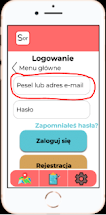
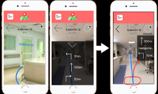
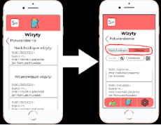
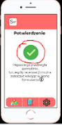

Podział działań w projekcie:
Jako zespół wspólnie przechodziliśmy przez proces projektowy, część którą się podzieliliśmy były: wywiady i obserwacje, testowanie, prototypowanie.
Z powyższych byłem odpowiedzialny za:
- 1 obserwacje
- zaprojektowanie prototypu formularza
- 1 test z użytkownikiem
Empatyzacja:
W procesie empatyzacji przeprowadziliśmy dwie dwugodzinne obserwacje w poczekalni SOR-u oraz 2 wywiady (1 z osobą starszą, 2 z osobą w podeszłym wieku) które przedstawiliśmy metodą story-sharing. Metodą World Cafe przedyskutowaliśmy w 5 różnych grupach studentów skojarzenia z SOR-em. Oto obszary problemowe jakie zaobserwowaliśmy:
Personel
- Brak osoby decyzyjnej biorącej odpowiedzialność.
- Brak pomocy personelu.
- Brak dyscypliny, pielęgniarki nie opiekują się dobrze pacjentami.
Czekanie
-
"Nic się nie robi tylko czeka."
- Nigdy nie wiadomo jak nagłym przypadkiem jesteś i kiedy wejdziesz.
- Niekomfortowe warunki czekania.
Oznakowanie
- Ciężko trafić za pierwszym razem.
- Złe oznakowanie szpitala lub brak oznakowania
Persona:
Osobami korzystającymi z usług świadczonych przez Szpitalny Oddział
Ratunkowy są zarówno osoby starsze jak i młode, z
niepełnosprawnościami jak i bez - więc za użytkowników powstałego
rozwiązania uznaliśmy szerokie grono przeróżnych osób.
Definiowanie problemu:
Analizując wnioski z wywiadów, obserwacji, rozmów wybraliśmy 3 obszary tematyczne który chcielibyśmy usprawnić, oto one:
1) Oczekiwanie na SOR-ZE
Naszym celem jest zmniejszenie kolejek na poszczególnych SOR-ach, a także umieleni czasu spędzonego w poczekalni. Chcemy zwrócić uwagę na pacjentów jak i osoby towarzyszące, które często doznają dużego poziomu stresu podczas oczekiwania.
2) Niedoinformowanie
Chcielibyśmy, aby pacjenci byli przygotowani na okoliczności, które występują na Szpitalnych oddziałach Ratunkowych. W ten sposób ograniczymy niepotrzebny stres pacjentów jak i osób, które musiałyby im np. dostarczyć wykaz leków.
3) Dojście na SOR
Chcemy usprawnić orientację przed i na terenise szpitali, aby ograniczyć czas spędzony na pytaniu o drogę i szukaniu gabinetów, lekarzy.
Ideacja:
W procesie ideacji za pomocą metod: Scamper, brain-writting oraz brain - storm generowaliśmy pomysły z których metodą now, how, wow grupowaliśmy je ze względu na poziom wpływu oraz realność rozwiązań, przez co mogliśmy odfiltrować te które nie miały racji bytu. Spośród przeróżnych pomysłów wybraliśmy 2:
-
Formularz
-
Interaktywna mapa
Prototypowanie:
Powstałym rozwiązaniem jest aplikacja posiadająca 2 funkcje - interaktywną mapę oraz możliwość zarejestrowania się na wizytę na SOR-ze (braliśmy pod uwagę iwyłącznie przypadki nie wymagające wzywania karetki). Dokonać rejestracji można z dowolnego miejsca i o dowolnej porze - wystarczy mieć pod ręką smartphone z dostępem do internetu.
Nie chcieliśmy stwarzać platformy rejestracyjnej, która byłaby anonimowa, ponieważ wtedy nie byłoby możliwości karania osób, które nie stawiły się na zapisaną wizytę - stąd rejestracja wymagałaby pojawienia się z dowodem osobistym w jednej z placówek szpitalnych.Ze względu na osoby niepełnoletnie oraz osoby niezarejestrowane, z jednego konta może korzystać wielu użytkowników.
W szpitalu nie czeka się i wyłącznie na wizytę. Często czeka się również na wypis lekarza, nieraz jest to parę godzin. Ze względu na to do aplikacji dołączyliśmy możliwość dołączenia dodatkowych informacji dla pacjenta.
Ze względu na potrzebę użycia komputera lub telefonu do korzystania z zaproponowanego przez nas rozwiązania staraliśmy się stworzyć przejrzysty interface - aplikacja ma 2 funkcje: rejestracja oraz mapa interaktywna, możliwość zmiany kolorów (np. dla daltonistów) , czcionki (dla osób słabowidzących).
Interaktywna mapa miałaby stosować wirtualne rozszerzenie rzeczywistości korzystając z kamery wbudowanej w telefon wskazywałaby drogę do poszczególnych gabinetów.
Testowanie:
Prototyp aplikacji łączącej w sobie 2 powyższe funkcje został przetestowany przez 2 studentki przez co zostały do niego wprowadzone poniższe zmiany:
1) Zamiast "e-mail, pesel" użyliśmy formy "pesel albo e-mail".

2) “Nie pomyślałabym o tym,że strzałka rozwinie nawigację"”
- przeniesienie informacji pomocniczych na ekran.

3) “Po co mi wcześniejsze wizyty”
- Wcześniej nie było żadnych informacji dodatkowych do zakładki "historia wizyt" wszystko było na 1 ekranie i takie rozwiązanie nie niosło za sobą korzyści. Zostały dodane informacje takie jak:
- diagnoza
- leczenie
- lekarz
- czas kontrolnej wizyty

4) Zauważyliśmy w trakcie badania klikanie w poniższą ikonę
Ze względu na to, że jest to intuicyjny rozwiązanie poniższa ikona daje możliwość powrotu do landing page-u

5) Zmiana nawigacji:
Początkowo nawigacja znajdowała się na górze ekranu i zawierała wyłącznie oznakowania początkowego wyboru części aplikacji. Jednak nie dawało to możliwości użytkownikom, żeby szybko przechodzili pomiędzy funkcjami aplikacji. Dlatego dodaliśmy navbar w dolnej części ekranu.